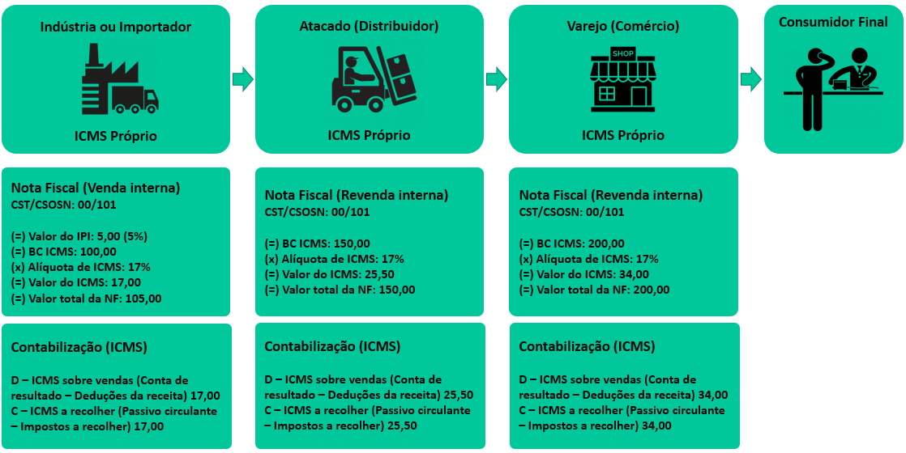
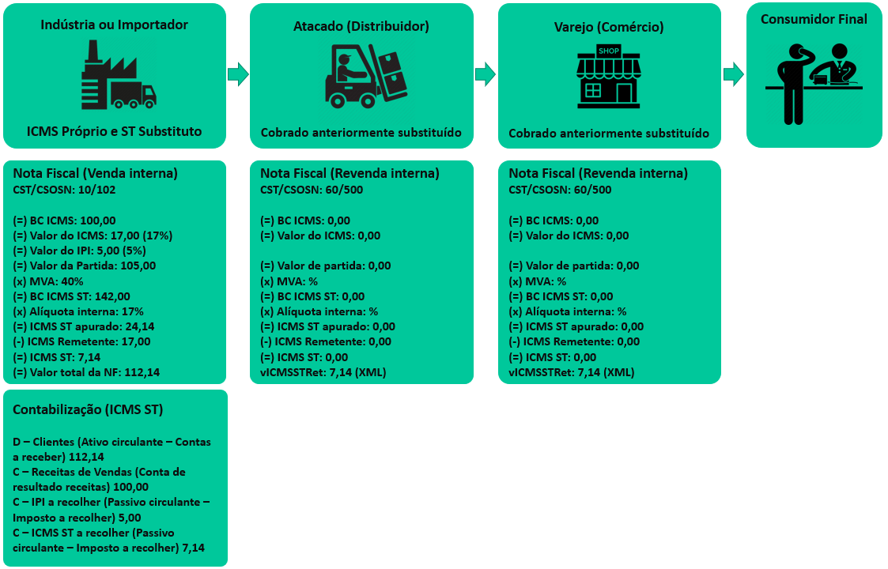
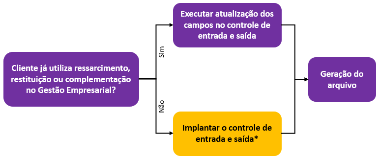
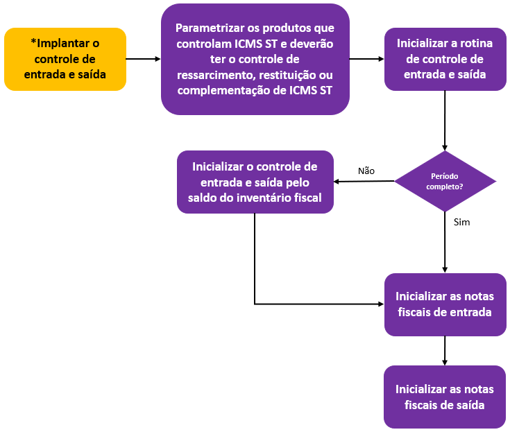

Texto atualizado em 01/2025.
O regime de substituição tributária está previsto na Constituição Federal de 1988, artigo 150, § 7º, em que esclarece que “poderá atribuir ao sujeito passivo da obrigação tributária a condição de responsável pelo pagamento do imposto, cujo fato gerador deva ocorrer posteriormente, assegurada a imediata e preferencial restituição da quantia paga, caso não se realize o fato gerador presumido.” (Incluído pela Emenda Constitucional nº 3, de 1993).
Em outras palavras, o ICMS ST é uma operação realizada pelos Estados, por meio do qual, estabelece a responsabilidade a um terceiro (Indústria ou importador) vinculado ao fato gerador do ICMS, pela obrigação do recolhimento do imposto incidente sobre determinada cadeia de circulação de mercadorias sujeitas a esse regime. O principal objetivo desta operação é facilitar o processo de fiscalização dos tributos perante o fisco, já que desta forma, somente um contribuinte da cadeia é quem irá recolher o imposto.
Por exemplo, quando efetuamos uma venda de mercadoria sujeita ao regime de substituição tributária de uma indústria ao distribuidor, o industrial deverá presumir e recolher o ICMS que será gerado nas operações subsequentes com esta mercadoria, ou seja, deverá ser retido no início da cadeia o ICMS, que será devido na venda do distribuidor para o varejista, e na venda do varejista para o consumidor final.

Regra Geral: BC ICMS = Valor Mercadoria + Frete + Seguro + Outras Despesas - Descontos)
Em relação ao IPI na BC do ICMS Normal:

BC ICMS ST = (Valor Mercadoria + Frete + IPI + Seguro + Outras Despesas - Descontos) x Margem de Lucro
MVA ajustada = [( A x B) - 1] x100
Sendo que:
A = ( 1 + MVA-ST original )
B = ( 1 - ALQ inter ) / ( 1 - ALQ intra )
Este regime apresenta duas modalidades de contribuintes:
O substituto, que é o contribuinte de fato (Indústria ou importador), responsável por calcular e pagar o ICMS ST relativo a todas as operações subsequentes que provavelmente acontecerão até chegar ao consumidor final.
E o substituído, que é o contribuinte pelo qual o substituto tributário, reteve e recolheu o ICMS ST relativo às mercadorias que serão revendidas pelo substituído.
O contribuinte substituído, embora não recolha o imposto, é responsável solidário com o substituto, portanto o contribuinte que receber alguma mercadoria sujeita a substituição tributária, e que por alguma ocasião não tenha sido feita a retenção corretamente, fica solidariamente responsável pelo recolhimento.
Os produtos sujeitos ao regime de substituição tributária são relacionados em Convênios (atos praticados no âmbito do CONFAZ (Conselho Nacional de Política Fazendária), assinados por todos os representantes de cada um dos Estados e Distrito Federal, por unanimidade), Protocolos (atos celebrados no âmbito do CONFAZ, assinados apenas por alguns dos estados) e legislações estaduais específicas de cada estado para determinar a aplicação de benefícios, incentivos fiscais, e regimes de tributação, nas operações e prestações internas e interestaduais.
O fornecedor remetente da mercadoria deverá reter e recolher o ICMS ST, desde que ambos os estados tenham celebrado o Protocolo ou Convênio, observando sempre a legislação de cada unidade federativa.
Cada estado poderá determinar a critério a formação da base de cálculo do imposto dos produtos para fins de substituição tributária com relação às operações subsequentes.
Nos termos da Lei Complementar 87/1996, a base de cálculo do ICMS ST poderá ser estabelecida por meio de quatro formas:
São produtos tabelados sugeridos por órgãos competente do Governo Federal para venda ao consumidor, por exemplo alguns produtos farmacêuticos.
São produtos em que o fabricante sugere o preço a ser vendido para o consumidor final, por exemplo os cigarros, sorvetes, automóveis, entre outros.
Também conhecido como Pauta Fiscal, de ST, de Valores, entre outras nomenclaturas, é uma tabela de preços pré-fixada pelos estados para determinadas mercadorias, trazendo informações detalhadas para consulta como preços, marcas, capacidade, quantidades. Os valores contidos não são preços de vendas, mas sim valores mínimos a serem utilizados como base de cálculo para apuração. Essa seleção ainda pode variar de um estado para o outro, inclusive dentro do próprio estado. O segmento mais comum abrangido é o de combustíveis.
Conforme a cláusula vigésima quarta do Convênio ICMS 142/2018, o preço será fixado com base em preços usualmente praticados no mercado, obtidos por levantamento, ainda que por amostragem ou por dados fornecidos por entidades representativas dos respectivos setores, adotando-se a média ponderada dos preços coletados. Esses produtos passam por alterações a todo momento seguindo a realidade de cada um.
A Margem de Valor Agregado, conhecida também como IVA (Índice de Valor Agregado) é um percentual estabelecido por estado e projetado para definir a Base de Cálculo do ICMS ST, ele é determinado a partir da variação do preço de venda do início ao fim da cadeia de um determinado produto sujeito a este regime. Nas operações interestaduais, nas quais a alíquota interna é maior que a interestadual, é utilizada a MVA Ajustada para equalizar os preços no mercado. A maioria dos produtos se enquadram nesta forma de tributação.
Importante
Com a edição do Convênio ICMS 142/2018, na hipótese em que o remetente for optante pelo Simples Nacional nos termos da Lei Complementar nº 123/2006, determina a não aplicação da MVA Ajustada nas operações interestaduais com produtos sujeitos a substituição tributária.
| Acordo Interestadual | Remetente | Destinatário | Operação Interestadual | MVA Utilizada |
|---|---|---|---|---|
| Sim - Conv. ou Prot. | Simples Nacional | Normal | Sim | Original |
| Sim - Conv. ou Prot. | Simples Nacional | Simples Nacional | Sim | Original |
| Sim - Conv. ou Prot. | Normal | Normal | Sim | Ajustada |
| Sim - Conv. ou Prot. | Normal | Simples Nacional | Sim | Ajustada |
| Sem acordo | Simples Nacional | Normal | Sim | Original |
| Sem acordo | Simples Nacional | Simples Nacional | Sim | Original |
| Sem acordo | Normal | Normal | Sim | Ajustada |
| Sem acordo | Normal | Simples Nacional | Sim | Ajustada |
Fonte: Orientações de Preenchimento da NF-e - versão 1.05 de novembro/2012
Confira abaixo a tabela com a lista das principais CFOPs relacionadas pelo governo de cada estado para vendas de produtos com substituição tributária.
| CFOP | CST (Normais) | CSOSN (Simples Nacional) | Descrição |
|---|---|---|---|
| 5.401 | 10 | 202 | Venda de Produção – Contribuinte Substituto |
| 6.401 | 10 | 202 | Venda de Produção – Contribuinte Substituto |
| 5.402 | 00 | 101 | Venda de Produção – Operação entre Substitutos |
| 6.402 | 00 | 101 | Venda de Produção – Operação entre Substitutos |
| 5.403 | 60 | 500 | Revenda – Contribuinte Substituto |
| 6.403 | 10 | 202 | Revenda – Contribuinte Substituto |
| 5.405 | 60 | 500 | Revenda – Contribuinte Substituído |
| 6.404 | 10 | 202 | Revenda – Contribuinte Substituído |
A questão da restituição e complementação do ICMS ST surgiu a partir do Recurso Extraordinário nº 593.849 de 2016, quando o Supremo Tribunal Federal reconheceu o direito do contribuinte de receber a possível diferença apurada entre o valor recolhido antecipadamente no início da cadeia, com o que foi realmente devido no momento da venda ao consumidor, dando como comprovação de que a Base de Cálculo presumida foi superior ao preço final efetivamente praticado.
Nessa sistemática, alguns contribuintes pagam mais e outros menos impostos; a partir desse fato, permitiu também que as UFs tenham o direito de receber a diferença do ICMS pago a menor, ou seja, quando a Base de Cálculo presumida do imposto for abaixo do preço final de fato praticado.
ICMS a ressarcir: o contribuinte poderá solicitar o ressarcimento do valor pago quando ocorrer uma bitributação do imposto.
Isso acontecerá quando:
Dados:
Compra Varejista (Entrada NF)
| Preço de Custo: | Base de Cálculo ICMS ST: | MVA: | Margem Real: |
|---|---|---|---|
| R$ 100,00 | R$ 140,00 | 40% | R$ 40,00 |
Revenda Varejista (Saída NF)
| Preço de Custo: | Preço de Venda: | MVA Real: | Margem Real: |
|---|---|---|---|
| R$ 100,00 | R$ 170,00 | 70% | R$ 70,00 |
Diferença Margem Real (saída) - Presumida (entrada) =
R$ 70,00 – R$ 40,00 = R$ 30,00
ICMS a complementar: R$ 30,00 x 17% = R$ 5,10
Alguns estados já possuem regulamentação quanto aos procedimentos a serem feitos a respeito do ressarcimento, complementação e/ou restituição do ICMS ST. Confira abaixo como ficam os procedimentos para os que já estão com algum regulamento e obrigação acessória definidos e como será o procedimento completo para aqueles que ainda não fazem o controle de entrada e saída.

Caso no fluxo acima, a etapa escolhida foi Cliente NÃO utiliza ressarcimento, restituição ou complementação no Gestão Empresarial, a partir de 2020 e conforme cada UF publicar suas definições, deve ser seguido o fluxo abaixo:

| UF | Regulamento | Obrigação Acessória | Pronunciamento sobre a obrigatoriedade dos registros do Leiaute do 14 no SPED EFD ICMS IPI |
|---|---|---|---|
| Acre | Decreto nº 6875/2017, Art 2º | Escrituração Fiscal Digital (EFD) | Ainda não há definição divulgada pela SEFAZ da UF. |
| Alagoas | Lei n° 8.085/2018, Art. 27 e Decreto nº 71.683/2020 (Complementação) e Decreto n° 35.245/1991, Art. 423.A (Ressarcimento e Restituição) | Escrituração Fiscal Digital (EFD) | |
| Amapá | Decreto nº 4.933/2019 | Escrituração Fiscal Digital (EFD) | |
| Amazonas | Resolução 5/2019 | Escrituração Fiscal Digital (EFD) e “Arquivo de Produtos e Arquivo de Pedidos” Enviado por meio de serviço disponível no Domicílio Tributário Eletrônico. | |
| Bahia | Lei nº 14.183/2019, Art. 9º | Apuração de Restituição |
Dispensado conforme avisos da SEFAZ |
| Distrito Federal | Instrução Normativa nº 08/2018 | Escrituração Fiscal Digital (EFD). Cumpre esclarecer que o LFE não é mais uma obrigação acessória do Distrito Federa, sendo substituído pela EFD a partir da competência de julho de 2019. Decreto nº 39.789/2019, Portaria nº 192/2019 e Portaria nº 258/2019. | Ainda não hás definição divulgada pela SEFAZ da UF. |
| Goiás | Lei nº 20.497/2019 | Apuração de Ressarcimento, Restituição e Complementação | |
| Maranhão | RICMS/MA Art. 539 | Apuração de Restituição | |
| Mato Grosso | Decreto 271/2019, Art. 9º e Decreto 312/2019 | Escrituração Fiscal Digital (EFD), Declaração de Substituição Tributária, Diferencial de Alíquota e Antecipação (DeSTDA) | |
| Mato Grosso do Sul | Decreto nº 15.484/2020 | Escrituração Fiscal Digital (EFD) e Arquivo Digital para Apuração do Complemento ou Ressarcimento do ICMS Retido por ST ou Pago por Antecipação | |
| Minas Gerais | Decreto 47.530/2018, revogado e substituído pelo Decreto 47.547/2018 | Escrituração Fiscal Digital (EFD) e Sintegra. | Obrigatório a partir de 01 de janeiro de 2020, conforme Decreto 47.809/2019 |
| Pará | Decreto nº 2.303/2018 | Escrituração Fiscal Digital (EFD) | Ainda não há definição divulgada pela SEFAZ da UF. |
| Paraíba | Decreto 18.930/1997, Art. 392 e 395 | Apuração de Restituição | Dispensado conforme Portaria SEFAZ nº 16/2020 |
| Paraná | Lei nº 19.595/2018, Art 6º e Decreto nº 3.886/2020 | Escrituração Fiscal Digital (EFD) e Arquivo Digital de Recuperação, Ressarcimento e Complementação do ICMS ST - ADRC ST | Dispensado conforme informativo do portal SPED PR |
| Pernambuco | Decreto nº 45.805/2018 | Apuração de Restituição e Complementação | Dispensado conforme Portaria SF nº 47/2020 |
| Piauí | Não há previsão na legislação Piauiense | Não há previsão na legislação Piauiense | Dispensado conforme Portaria nº 22/2020 |
| Rio de Janeiro | Não há previsão na legislação Fluminense | Não há previsão na legislação Fluminense | Dispensado conforme SUCIEF nº 73/2019 |
| Rio Grande do Sul | Decreto Nº 54.308/2018, IN nº 48/2018, com data de início de vigência prorrogada para dia 1º de março de 2019, através do Decreto nº 54.490/2019 | Escrituração Fiscal Digital (EFD) e Guia de Informação e Apuração do ICMS (GIA) | Obrigatório conforme IN RE nº 87/2020 |
| Santa Catarina | Lei 17.538/2018 e Decreto nº 1.818/2018 | Escrituração Fiscal Digital (EFD) e Demonstrativo para Apuração Mensal do Ressarcimento, da Restituição e Complementação do ICMS Substituição Tributária (DRCST). | Obrigatório a partir de 01 de janeiro de 2022, conforme Portaria SEF nº 327/2020 |
| São Paulo | Portaria CAT nº 42/2018 | Escrituração Fiscal Digital (EFD) e Arquivo previsto na própria portaria “Apuração do ICMS ST” | Dispensado conforme Comunicado CAT 1/2020 |
| Sergipe | Lei nº 8.499/2018, Art. 24 | Apuração de Restituição e Complementação | Ainda não há definição divulgada pela SEFAZ da UF. |
Para auxiliar no processo de ressarcimento, restituição e complementação do ICMS ST, a Senior Sistemas lançou a aplicação Robô do ICMS ST, que apresenta os dados para ajuste de lançamentos, resolução de críticas, informações faltantes, etc. A aplicação está disponível no diretório de instalação do Gestão Empresarial ERP (a partir das versões 5.8.11.63 e 5.8.10.150) e o arquivo com as validações fica disponível no diretório ...\modelos\robodiagnosticos. Para mais informações, acesse a documentação sobre o ICMS ST.